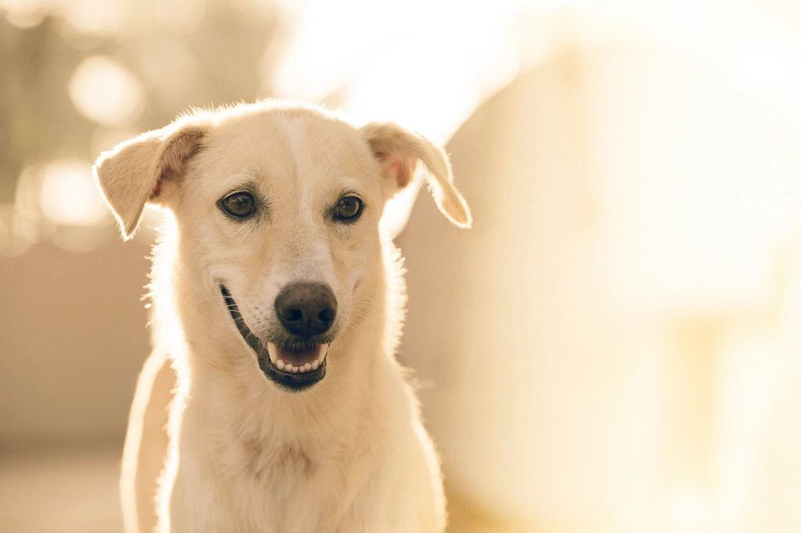
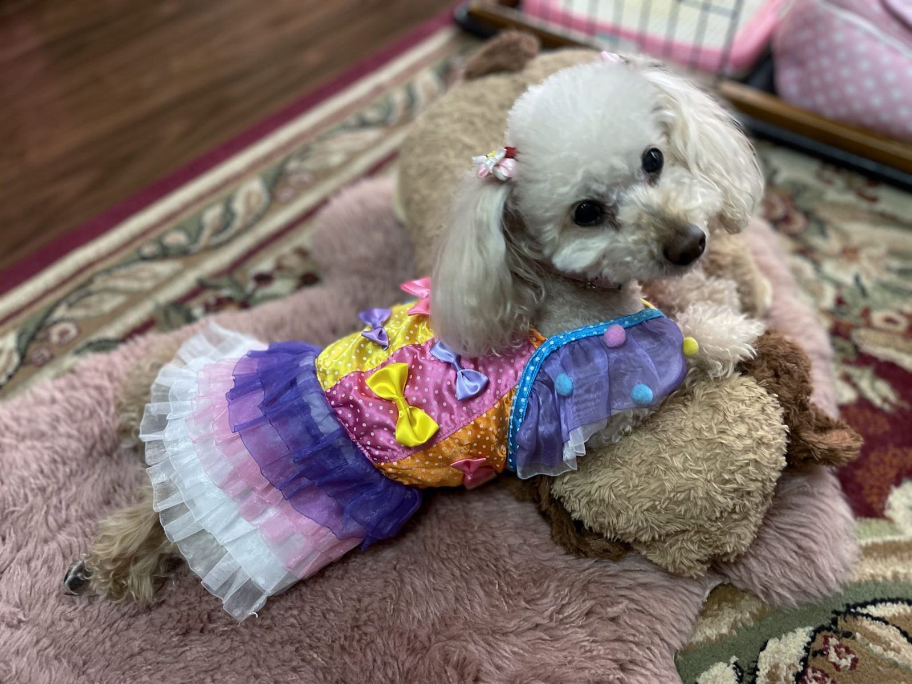
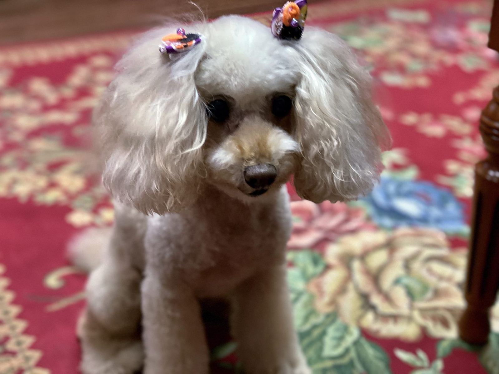
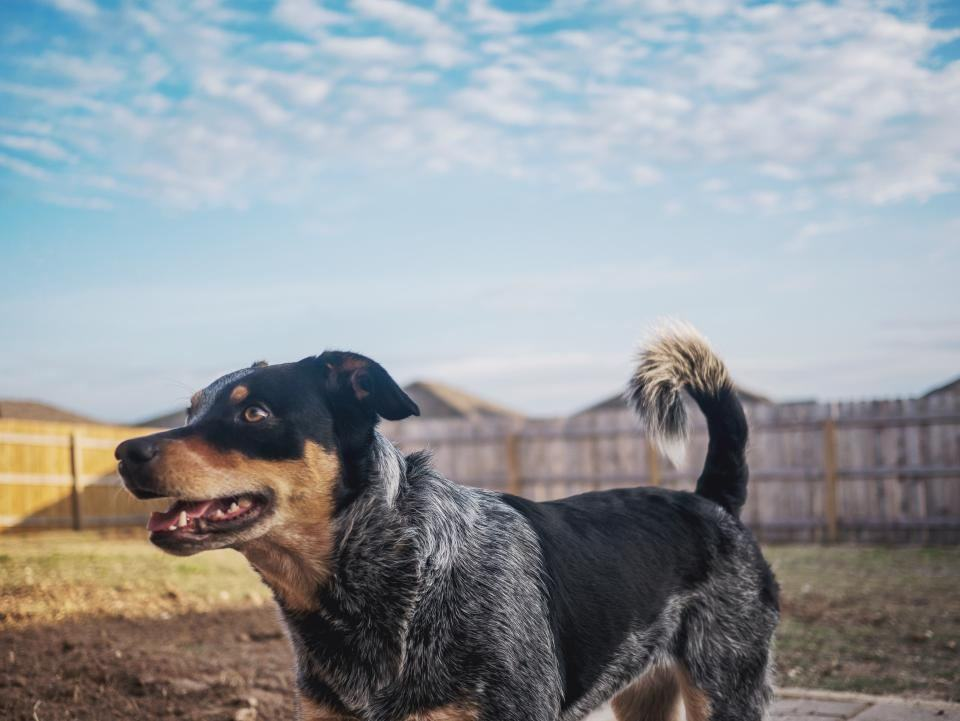

Prislista
Priserna beror på storlek, pälstyp och skick.
Klippningar för lockig päls
Bad och kam
Bad, fön och genomkamning för att hålla tovorna borta.
fr. 595 krmellan klippningarna- Genomkamning till huden
- Bad och stretchfön
- Rakade tassar och nos
- Kloklipp
- Populärast
Helklippning
Komplett klippning i valfri stil.
fr. 995 krper tillfälle- Allt i Bad och kam
- Klippning med maskin och sax
- Huvud och öron formade med sax
- Borstlektion och ny tid
Utställningsklipp
Continental clip eller English saddle för pudel.
fr. 2 400 krper tillfälle- Klippning enligt FCI-standard
- Inklippning i flera omgångar
- Finputs inför ringen
- Rådgivning om pälsvård före utställning
Fler priser
| Toypudel | fr. 895 kr |
|---|---|
| Dvärgpudel, bichon frisé | fr. 995 kr |
| Cockapoo, maltipoo | fr. 1 095 kr |
| Mellanpudel | fr. 1 295 kr |
| Lagotto romagnolo | fr. 1 395 kr |
| Labradoodle, goldendoodle | fr. 1 595 kr |
| Storpudel | fr. 1 795 kr |
| Valpkort, 4 klipp | 1 900 kr |
| Linjeborstkurs, 1 timme | 450 kr |
| Tovutredning, per kvart | 175 kr |
Priserna gäller välvårdad päls. Tovig päls debiteras per påbörjad kvart.
Fyra steg för lockig päls
- 1

Genomkamning
Vi kammar ända ned till huden för att hitta tovor innan pälsen blir våt.
- 2

Bad och stretchfön
Fatima fönar lockarna raka, så att varje hårstrå kan klippas till samma längd.
- 3

Klippning
Kroppen med maskin och kam, huvud, öron och svans med sax.
- 4

Borstlektion
Vi visar var tovorna brukar komma och vilken borste du ska använda hemma.
Klipper ni andra raser än lockiga?
Nej, vi tar bara hundar med lockig eller ullig päls som inte fäller. Strävhåriga och dubbelpälsade raser hänvisar vi vidare.
Hur ofta ska en pudel klippas?
Var fjärde till sjätte vecka för korta klippningar, var sjätte till åttonde för längre. Badas och kammas bör den varannan vecka.
Varför tovar sig min doodle hela tiden?
Doodles har ofta en blandning av hår och ull som filtar sig nära huden. Linjeborstning med kam är lösningen.
Måste ni raka bort tovor?
Inte alltid. Vi reder ut lösa tovor med avfiltningsspray och kam. Filtad päls som sitter tätt mot huden rakar vi, efter att ha ringt dig.
Klipper ni utställningspudlar?
Ja, continental clip, English saddle och valpklippning enligt FCI-standard.
Hur lång tid tar en klippning?
En toypudel 1,5–2 timmar, en storpudel eller goldendoodle 3–4 timmar.